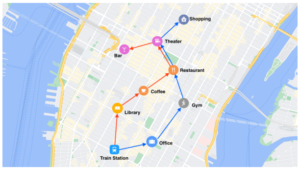
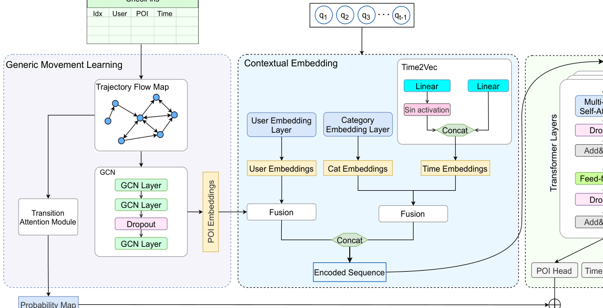

GETNext: Trajectory Flow Map Enhanced Transformer for Next POI Recommendation (轨迹流图增强 Transformer 的下一兴趣点推荐)
- 会议/期刊: SIGIR 2022
- 作者与机构: Song Yang, Jiamou Liu, Kaiqi Zhao（The University of Auckland）
- 推荐链路定位: 召回（Next-POI 候选全库排序）
- 研究方向: 时空轨迹与 POI 本地生活推荐 / 图神经网络推荐
- 论文原文: https://arxiv.org/abs/2303.04741v1
- 开源代码: https://github.com/songyangco/GETNext
TL;DR (1分钟核心速览)
现有 Next-POI 方法把问题当作纯用户自身序列预测（RNN/LSTM/自注意力），完全丢弃跨用户的协同转移信号，导致短轨迹与非活跃用户（冷启动）性能崩塌。本文提出用户无关的全局轨迹流图（POI 为节点、连续访问为带权有向边），用谱 GCN 隐式编码全局转移、用转移动注意力图 \(\Phi\) 显式注入转移概率，再与用户/时间/类目嵌入一起送入 Transformer 编码器与多 MLP 头。在 NYC/TKY/CA 三数据集全库排序下，NYC Acc@5 从 45.82% 提升至 50.89%（+11.1%），非活跃用户 Acc@10 从 31.24% 升至 43.94%。
Background & Motivation (背景与核心矛盾)
- 主流范式: 将 Next-POI 视作序列预测，用 ST-RNN / STGN / PLSPL / STAN 等循环或自注意力结构建模单个用户轨迹的时空上下文。
- 前人局限: ①短轨迹（1–2 个 check-in）时空上下文不足，STGN 在短轨迹上 Acc@1 仅 7.23%；②非活跃用户历史稀疏，模型无法学到个性化转移；③POI 类目与时间强相关（火车站早晚高峰 vs 酒吧夜间），现有模型未把「时间—类目」显式桥接。
- 核心洞察 (Key Insight): 不同用户会复现相同的轨迹片段（同一餐厅\(\to\)同一剧院），这些片段构成跨用户的集体轨迹流；即使不知道用户历史，仅凭当前 POI 的出边分布也能把随机猜测显著拉高——尤其对\(k\)较大的 top-\(k\) 更有效。
- 本文切入点: 把全体用户轨迹压成一张「用户无关」的有向带权 POI 转移图，让图结构承担协同信号，Transformer 只需在其之上做个性化微调。

Method (核心方法设计)
1. 整体框架 (Overall Architecture)
模型有两条并行的图通路与一条序列通路。图通路：由全部历史轨迹构建轨迹流图 \(\mathcal{G}\)，谱 GCN 逐层聚合入邻居得到 POI 嵌入\(\mathbf{e}_P\)（编码全局转移，且注入经纬度、类目、签到频次属性）；同时以节点特征与\(\tilde{L}\)生成\(N\times N\)转移动注意力图\(\Phi\)保存显式转移概率。序列通路：每个 check-in 由\([\mathbf{e}_{p,u};\mathbf{e}_{c,t}]\)表示——POI 嵌入与用户嵌入经门控融合，时间（Time2Vec）与类目嵌入经另一融合层拼接，得到\(d=2(\Omega+\Psi)\)维向量；轨迹送入两层 Transformer 编码器，三个 MLP 头分别预测下一 POI、下一签到时间与下一类目；最终 POI 打分叠加当前 POI 在\(\Phi\) 中对应行的转移先验（残差式注入），联合损失端到端训练。
flowchart TD
A["历史轨迹 Sk 当前轨迹 q1..qk"] --> B["轨迹流图 G: POI节点+连续访问有向边"]
B --> C["谱GCN -> POI嵌入 eP"]
B --> D["转移注意力图 Phi"]
A --> E["用户/类目/Time2Vec 嵌入融合"]
C --> E
E --> F["Transformer 编码器 + POI/Time/Cat 三头"]
D --> G["打分残差叠加转移先验"]
F --> G
2. 关键设计拆解 (Key Designs)
- 轨迹流图 + 谱 GCN 编码全局转移：前人只建模 user-item 关联或单跳随机采样邻居，缺乏多跳全局转移。本文把边权设为共现次数 \(w(p_1,p_2)\)，用行归一化拉普拉斯\(\tilde{L}=(D+I_N)^{-1}(A+I_N)\)传播：\(H^{(l)}=\sigma(\tilde{L}H^{(l-1)}W^{(l)}+b^{(l)})\)。节点聚合「前驱」信息，故 POI 嵌入天然编码「我从哪里来、通常去哪里」，使零历史用户也可被推荐当前 POI 的高频出边。
- 转移动注意力图 \(\Phi\)（显式概率先验）：GCN 只是隐式携带转移信息，本文再加一条显式通道：\(\Phi_1=(XW_1)a_1,\ \Phi_2=(XW_2)a_2\)，\(\Phi=(\Phi_1\mathbf{1}^{\top}+\mathbf{1}\Phi_2^{\top})\odot(\tilde{L}+J_N)\)。广播加构成非对称\(N\times N\)矩阵，\(\tilde{L}+J_N\)把取值范围从\([0,1]\)平移到\([1,2]\)以避免零值并注入图拓扑；最终\(\hat{y}_{poi}=\hat{Y}_{poi}^{(k\cdot)}+\Phi^{(p_k\cdot)}\)，即用最后一步 POI 的出边分布直接校正打分，等价于一个可学习的「全局转移残差」。
- 时间—类目融合与训练目标：类目级时间规律比单 POI 稳定（NYC 单 POI 平均不足 6 次签到，类目级超 570 次），故用 \(\mathbf{e}_{c,t}=\sigma(w_{c,t}[\mathbf{e}_t;\mathbf{e}_c]+b_{c,t})\)建模「早 8 点该推火车站而非酒吧」。总损失\(\mathcal{L}=\mathcal{L}_{poi}+10\mathcal{L}_{time}+\mathcal{L}_{cat}\)（POI/类目用交叉熵，时间用 MSE 并放大 10 倍对齐梯度量级），时间与类目头充当正则项。负采样：全库 softmax，无显式负采样；推理仅需一次编码+矩阵乘，开销与序列长度线性相关。
Experimental Setup & Evaluation Protocol (实验设置与评估协议)
- 数据集与预处理: 过滤签到数 <10 的 POI 与用户，按 24 小时间隔切分为轨迹，剔除单点轨迹：
| 数据集 | #Users | #Items(POI) | #Interactions | #Cat | 特征/场景说明 |
|---|---|---|---|---|---|
| NYC | 1,075 | 5,099 | 104,074 | 318 | Foursquare，纽约市区，14,160 条轨迹 |
| TKY | 2,281 | 7,844 | 361,430 | 291 | Foursquare，东京，44,692 条轨迹 |
| CA | 4,318 | 9,923 | 250,780 | 301 | Gowalla，加州+内华达，32,920 条轨迹，空间最稀疏（>40 万 km²） |
- 数据划分与防穿越: 全局时间戳切分（chronological 80%/10%/10%）；轨迹流图仅用训练集前 80% 构建，严格防穿越；测试集中出现但训练未见的用户/POI 直接跳过不参与评测。
- 排名评测协议: 无偏 Full-Ranking（全库 \(N\)个 POI 排序，无负采样），指标 Acc@\(\{1,5,10,20\}\) 与 MRR。
- 对比基线与超参设置: 9 个基线，覆盖 MF / FPMC / PRME（矩阵分解与马尔可夫）与 LSTM / ST-RNN / STGN / STGCN / PLSPL / STAN（序列与注意力 SOTA）。嵌入维度 \(\Omega=128\)、\(\Psi=32\)，GCN 三层（32/64/128），Transformer 两层、2 头、FFN 1024，Adam\(10^{-3}\)、dropout 0.3、batch 20、200 epochs。
Key Experimental Results (实验关键数据)
1. 主实验对比 (Main Results)
| 数据集 | 方法 | Acc@1 | Acc@5 | Acc@10 | Acc@20 | MRR |
|---|---|---|---|---|---|---|
| NYC | FPMC | 0.1003 | 0.2126 | 0.2970 | 0.3323 | 0.1701 |
| NYC | LSTM | 0.1305 | 0.2719 | 0.3283 | 0.3568 | 0.1857 |
| NYC | ST-RNN | 0.1483 | 0.2923 | 0.3622 | 0.4502 | 0.2198 |
| NYC | STGN | 0.1716 | 0.3381 | 0.4122 | 0.5017 | 0.2598 |
| NYC | STGCN | 0.1799 | 0.3425 | 0.4279 | 0.5214 | 0.2788 |
| NYC | PLSPL | 0.1917 | 0.3678 | 0.4523 | 0.5370 | 0.2806 |
| NYC | STAN | 0.2231 | 0.4582 | 0.5734 | 0.6328 | 0.3253 |
| NYC | GETNext | 0.2435 | 0.5089 | 0.6143 | 0.6880 | 0.3621 |
| NYC | Improv. | +9.1% | +11.1% | +7.1% | +8.7% | +11.3% |
| TKY | STAN | 0.1963 | 0.3798 | 0.4464 | 0.5119 | 0.2852 |
| TKY | GETNext | 0.2254 | 0.4417 | 0.5287 | 0.5829 | 0.3262 |
| TKY | Improv. | +14.8% | +16.3% | +18.4% | +13.9% | +14.4% |
| CA | STAN | 0.1104 | 0.2348 | 0.3018 | 0.3502 | 0.1869 |
| CA | GETNext | 0.1357 | 0.2852 | 0.3590 | 0.4241 | 0.2103 |
| CA | Improv. | +22.9% | +21.5% | +19.0% | +21.1% | +12.5% |
2. 消融实验 (Ablation Study)
| 变体 (NYC) | Acc@1 | Acc@5 | Acc@10 | Acc@20 | MRR |
|---|---|---|---|---|---|
| Full GETNext | 0.2435 | 0.5089 | 0.6143 | 0.6880 | 0.3621 |
| w/o Graph（改嵌入层） | 0.2163 | 0.4512 | 0.5248 | 0.6402 | 0.3398 |
| w/o GCN（随机游走替代） | 0.2062 | 0.4582 | 0.5601 | 0.6589 | 0.3187 |
| w/o Transformer（换 LSTM） | 0.2221 | 0.4617 | 0.5520 | 0.6261 | 0.3317 |
| w/o Time&Cat | 0.2296 | 0.4804 | 0.5489 | 0.6484 | 0.3495 |
| w/o Fusion（直接拼接） | 0.2355 | 0.4731 | 0.5726 | 0.6614 | 0.3533 |
| Single decoder（仅 POI 头） | 0.2207 | 0.4721 | 0.5722 | 0.6591 | 0.3443 |
3. 关键实验发现 (Key Findings)
- 图通路是最大增益源，且主要收益体现在大 \(k\)：去掉轨迹流图 Acc@1 只掉 2.7 个点，但 Acc@10 从 61.43% 跌到 52.48%；用随机游走替代 GCN 更差（Acc@1 仅 20.62%），说明「谱聚合 + 属性注入」比单纯共现统计更能刻画转移。这与作者假设一致——全局流提供的是「候选池级的粗筛纠偏」而非精确 top-1。
- 冷启动缓解被直接量化：非活跃用户（<13 条轨迹）Acc@1/@10 从 STGN 的 9.26%/31.24% 提升到 12.24%/43.94%；短轨迹（最短 15%）Acc@1 从 7.23% 跃升到 21.86%，已接近长轨迹组（24.52%）——说明性能对轨迹长度不再敏感，这是纯序列模型的固有短板。
- 多任务头与时间类目嵌入是「廉价但稳定」的增益：移除 Time&Cat 使 Acc@1 降 1.4 点、MRR 降 0.013；退化到单 POI 头（去掉时间/类目辅助任务）损失 2.3 点 Acc@1，证明时间头对签到间隔波动（0.5–6 小时）的校准作用不可忽视。
Highlights & Limitations (亮点、对比与审稿批判)
- 与代表作对比 (vs. Prior Work): 相比 STGN/ST-RNN 仅用时间门与距离门建模单用户序列，本文把「跨用户集体流」作为一等公民；相比 STAN 的自注意力只做轨迹内非相邻点交互，本文额外引入图外部的全局先验；相比 GTAG/GGLR 等 POI 图工作（面向非序列推荐、引入 session 节点导致图爆炸），本文的轨迹流图仅含 POI 节点、规模可控（NYC 4,980 节点 / 37,756 边，平均聚类系数 0.1866）。
- 可迁移亮点: ①「隐式 GCN 嵌入 + 显式转移注意力残差」的双通道注入范式，可平移到会话推荐与电商 next-item；②用类目级统计替代稀疏 item 级统计来做时间建模，是低资源场景的通用技巧。
- 审稿级局限批判: ①轨迹流图是「用户无关」的静态图，无法区分工作日/周末或人群类型，作者也在 future work 中承认；②实验缺少显著性检验与多次运行方差，且 w/o Graph 与正文报告的冷启动数字（42.11% vs 43.94%）存在轻微口径不一致；③CA 数据集上仍大幅低于 NYC/TKY（Acc@1 13.57%），说明空间稀疏场景下的图构建（边权仅用共现次数、无地理距离衰减）仍有改进空间。
Rating (四维评分)
- 方法创新性 (Novelty): ⭐⭐⭐⭐ （首个把全局轨迹流图用于 Next-POI，双通道图信息注入设计清晰且有物理直觉）
- 评估协议与实验扎实度 (Protocol & Experiments): ⭐⭐⭐⭐ （三数据集全库排序、9 个强基线、含冷启动与轨迹长度分桶分析，但缺显著性检验与方差报告）
- 写作与数学规范度 (Clarity & Rigor): ⭐⭐⭐⭐ （公式与模块对应清楚，\(\Phi\) 的构造与残差注入推导完整，个别符号与实验数字口径略有出入）
- 工业落地与复现价值 (Industrial & Practical Value): ⭐⭐⭐⭐⭐ （代码开源，图为离线可预构建的静态图，在线仅需 Transformer 前向+一次查表，工程成本极低）